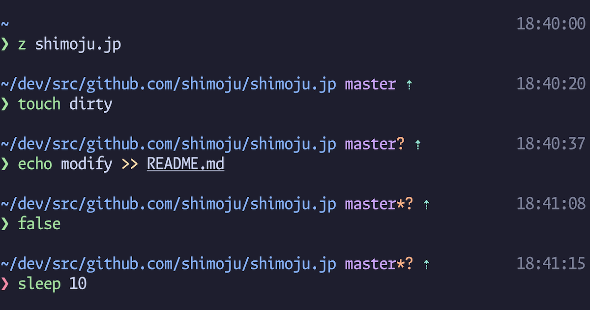

2026年、開発環境を一新した。Ghostty、herdr、Neovim、mise、そして自作Zshプロンプト
これまではVisual Studio Codeをメインに、ターミナルは補助として内蔵ターミナルで済ませることが多かった。 しかしAIを中心とした開発に移行し、自分でコードを書くことがほぼなくなった今、日々の作業がエディタよりもターミナル中心に移っている。 ターミナルに求めるものも変わってきて、AIエージェントを効率的に管理するための機能や、素早くエージェントを立ち上げられる起動の速さや応答性を重視するようになった。